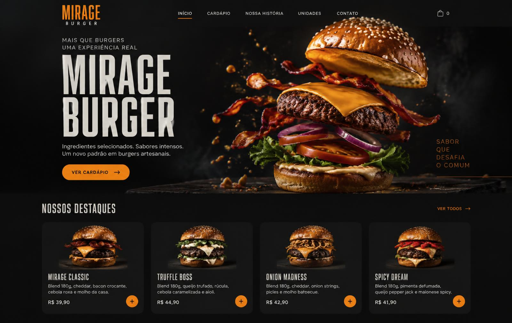

mirage-burger — projeto conceitual

01 — Web Development / Landing Page01
Mirage Burger
Projeto conceitual de uma hamburgueria artesanal, com identidade visual própria, cardápio interativo, elementos visuais de alimentos, animações e layout responsivo.
HTML5CSS3JavaScript